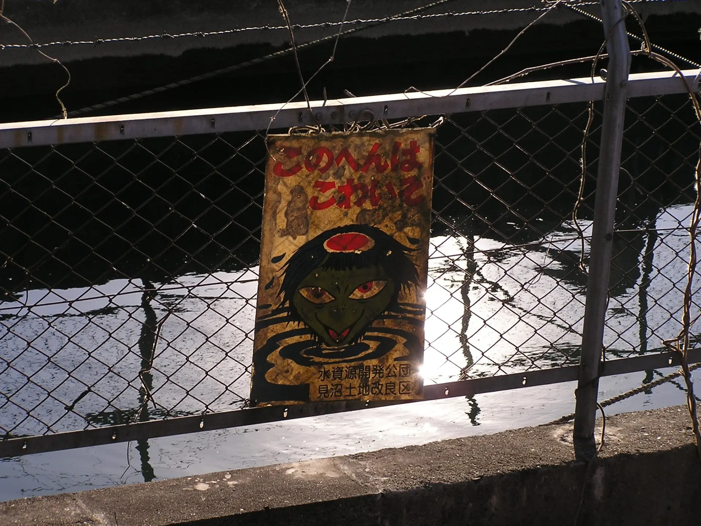
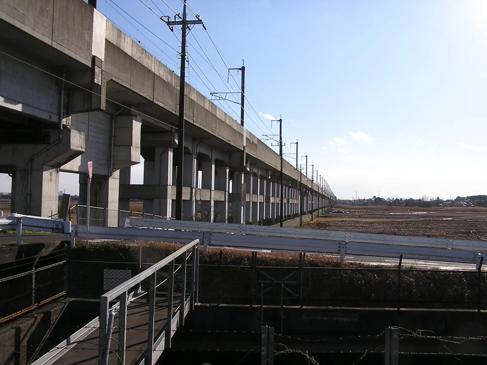
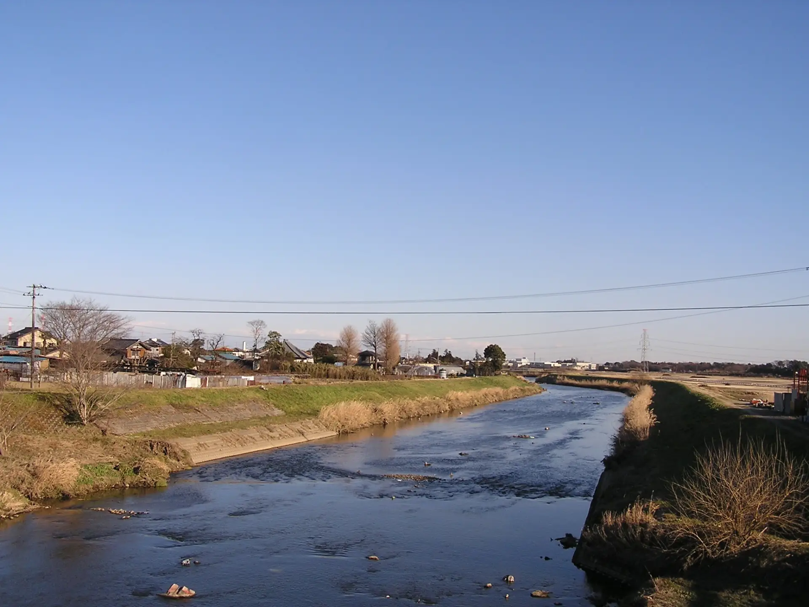
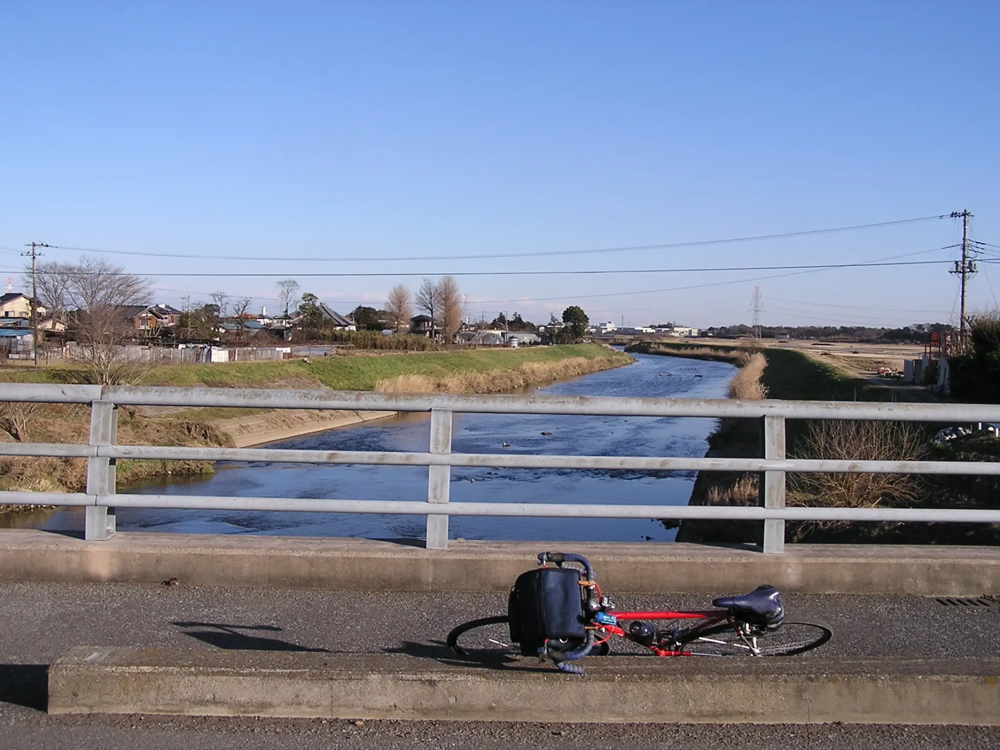
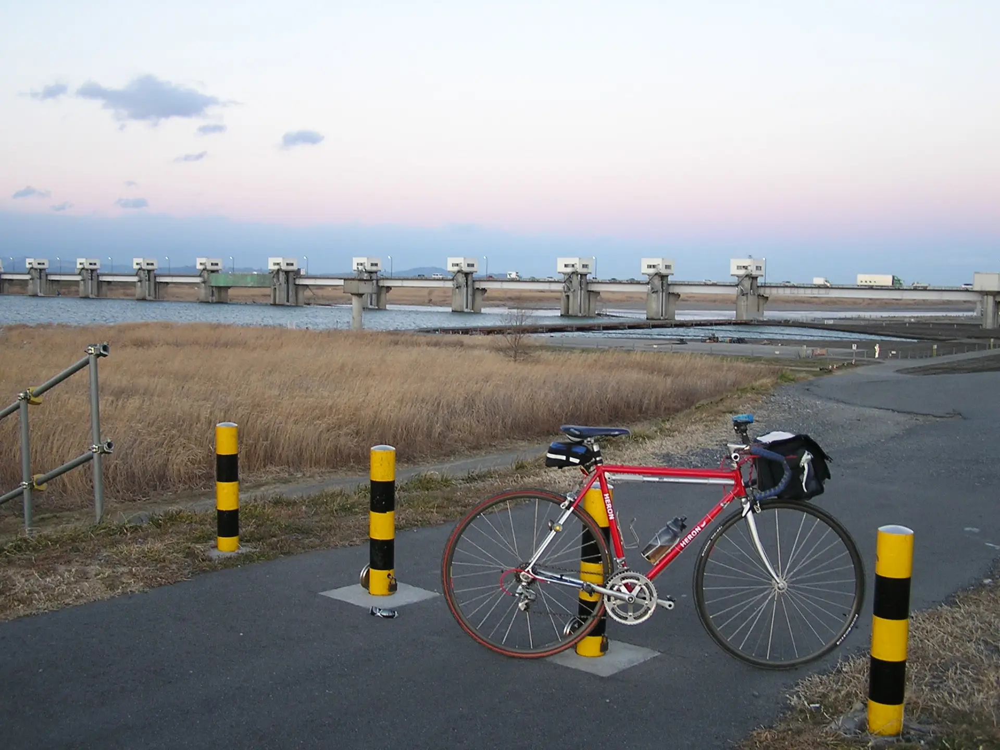
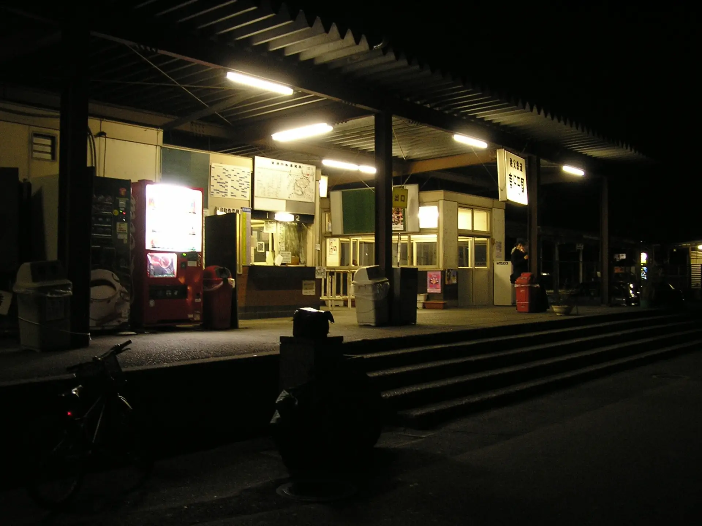

2005年2月3日 見沼代用水 緑のヘルシーロード 自転車ツーリング
2005年になり、あまり自転車に乗ることができていなかったので、午後から見沼代用水 緑のヘルシーロードを走りにいった。
見沼代用水は用水路のため流れが速く、落ちると助からないといわれている。
見沼代用水が東北新幹線と交差する地点。
おそらく元荒川と交差する地点だろうか？
 ということで、陽が完全に落ちる前に利根大堰まで着くことができた。
完全に暗くなってしまったので、横着して秩父鉄道の東行田駅から輪行で帰った。正直、高崎線まで行けばよかったのにと思う。
2025年12月19日記事公開